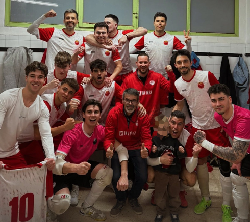

Victoria del Parets en la pista del Montornès Futbol Sala AE A (3-5)
El Primer Equipo Masculino del F.S. Parets consiguió una sólida victoria por 3-5 en la pista del Montornès Futbol Sala AE A. El equipo salió muy concentrado y supo encarrilar el partido desde el inicio, manteniendo la ventaja durante todo el encuentro para sumar tres puntos importantes.